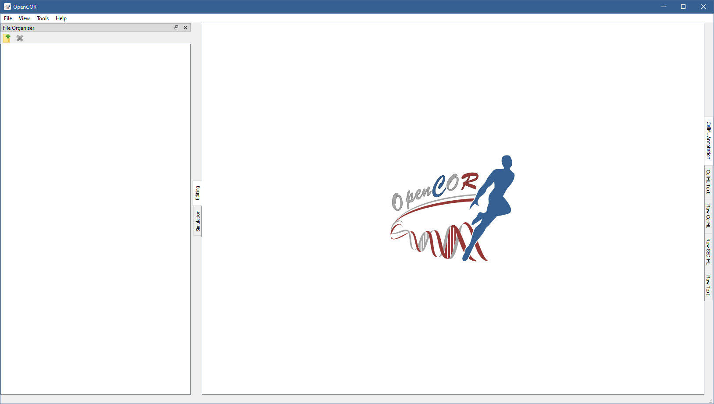
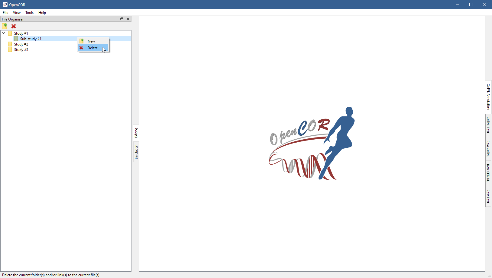
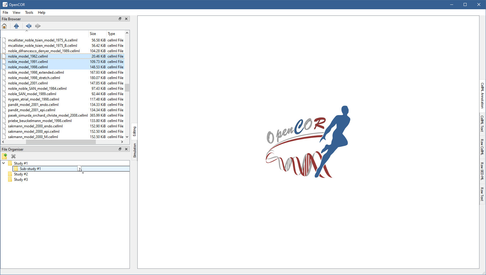
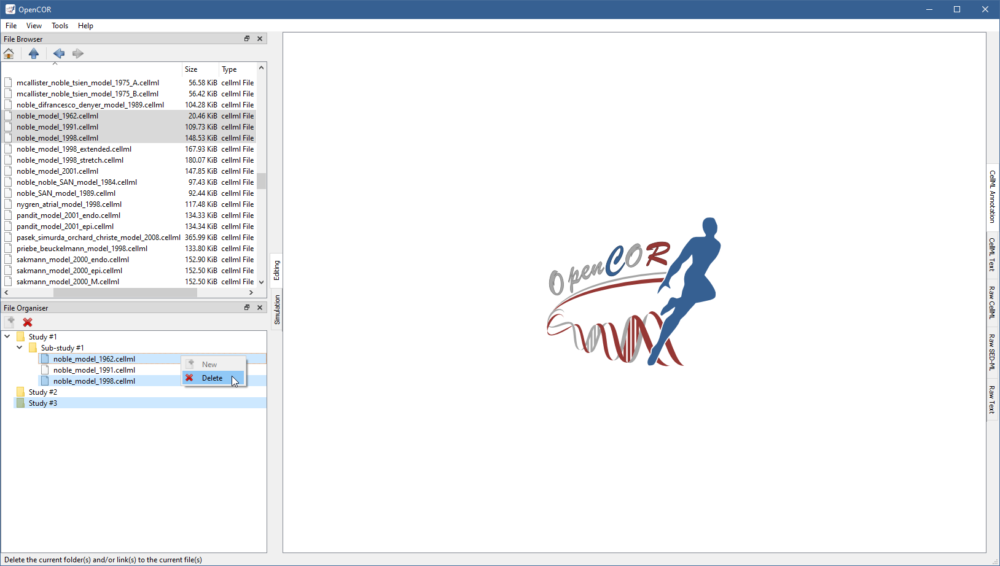

FileOrganiserWindow plugin¶
The FileOrganiserWindow plugin allows you to organise your files in a virtual manner, i.e. independently of where they are physically located. Your virtual environment is remembered from one session to another and is originally empty:
{kind=link}
To create a (virtual) folder, you need to click on the  button in the tool bar (or use the context menu):
button in the tool bar (or use the context menu):
{kind=link}
The folder can be renamed (by pressing F2 on Windows/Linux or Enter on macOS) and other (sub-)folders created, if needed:
{kind=link}
The (sub-)folders can be moved around by dragging and dropping them within your virtual environment. An existing (sub-)folder can be deleted by clicking on the button in the tool bar (or by using the context menu):
{kind=link}
{kind=link}
Files can be dragged and dropped from the File Browser window (or the system’s file manager) onto your virtual environment:
{kind=link}
As for folders, (virtual) files can be moved/deleted (together with folders or not):
{kind=link}